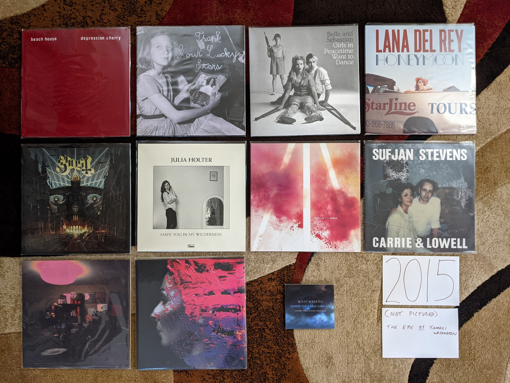
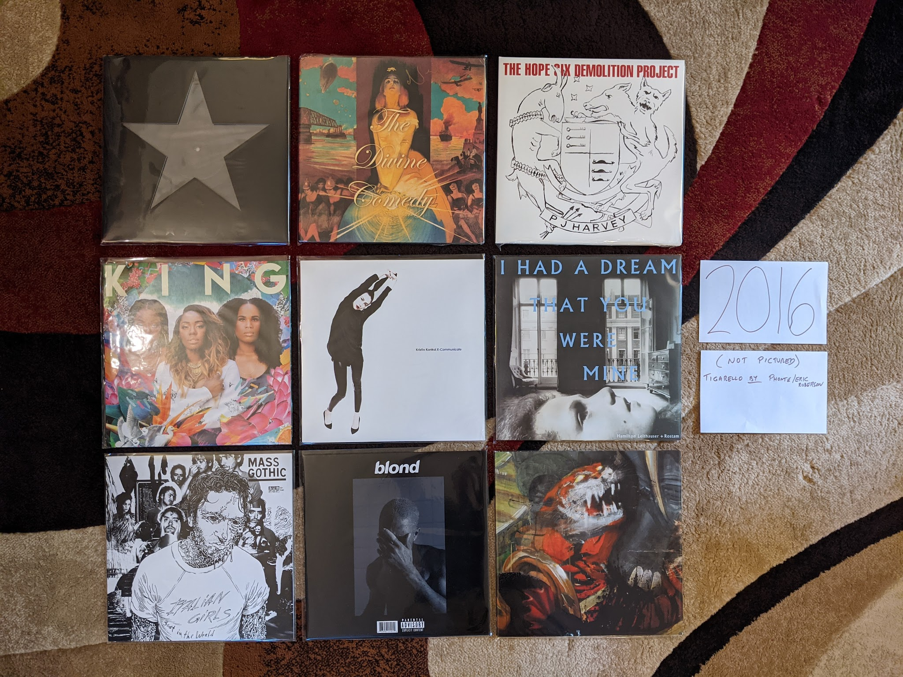
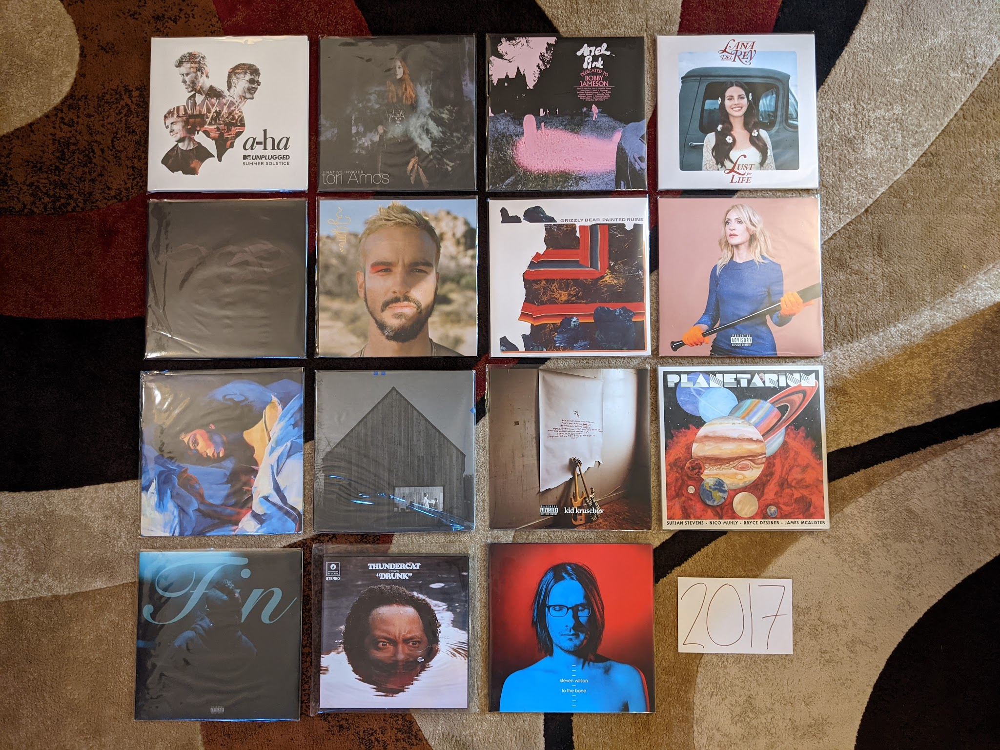
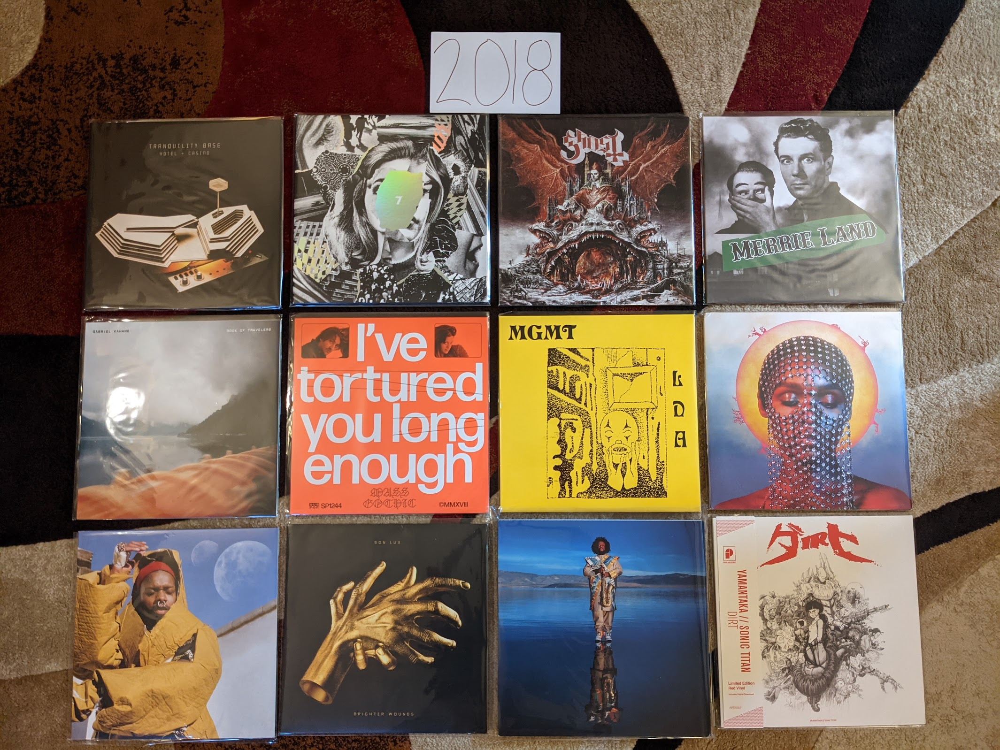
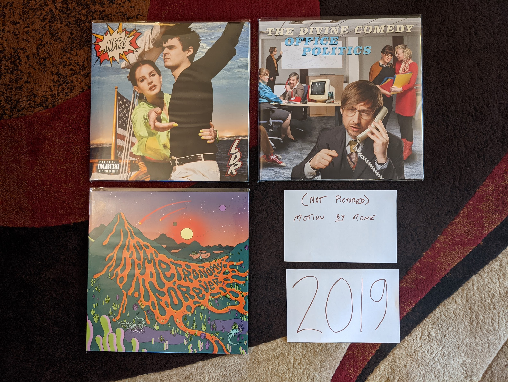

2010s¶
{kind=link}
This was an interesting decade for music and for my relationship with music. When it began, we were at the point I like to call “peak indie” where a collection of small labels were releasing the most culturally relevant albums, and the big labels were trying to pretend they were the small labels in order to compete. I was writing for a local music blog, and attending multiple large music festivals per year. These were mostly the (now rare) club festivals that were spread out among multiple small venues over several days. These were the kind of festivals that demanded research and study to attend properly. I loved the process of reading about all the bands, getting ahold of a sample of music, and laying out my plan to rove about the clubs to catch my favorites. The tee-shirts and vinyl records bought from merch stands at these shows are now staples of my wardrobe and album collection today.
When the decade closed, mainstream pop from the major labels had returned as the dominant force in the music scene. This kind of mainstream music had never really went away, it was more that independent music receded to the shadows again. I have nothing against mainstream pop, as my lists for earlier decades show. My objections mostly have to do with the impacts of how modern pop music is made. Today, your average pop single is written and produced by a committee of dozens. When that many folks contribute to the creative process it has the effect of sanding every edge off of the track by the time it reaches the finish line. Any remaining distinguishing characteristics are so intentionally created, that it can’t help but feel contrived. I haven’t been to a music festival since 2013. That last one was the inaugural “Crossing Brooklyn Ferry”, a combination of the most high brow indie combined with artists that typically get labeled as contemporary classical. The rest of the decade, 75% of the live music I saw was the local symphony orchestra, This was where “I got old”, but where exactly did it happen?
2015¶
I turned 35 in 2015, which sounded very old at the time. My relationship with music was also making me feel old. I saw three bands this year: The Psychedelic Furs, The Church, and The Chameleons. It was the year of 80s nostalgia I guess. I was very much treading musical water, keeping in touch with the artists that hadn’t let me down in the past. That ended up working out really well in 2015, as several of my favorites released their best work.
{kind=link}
Depression Cherry by Beach House - This was when the world caught up with what I already knew, these guys were one of the best bands currently working. It is a little strange that dream pop made by two people with fairly minimal instrumentation and fairly consistent production techniques has had such staying power. This is great record, and “Beyond Love” is my favorite song of theirs.
Thank Your Lucky Stars by Beach House - Now, releasing two records after one another was some serious flexing. In my opinion, this one is even a little bit better. It certainly is a bit brighter in a way that I like.
Girls in Peacetime Want to Dance by Belle and Sebastian - Very solid an enjoyable, but the kind of record that made me wonder how much more they could milk the sound they had been working for the last decade plus. Sarah Marin’s vocal contributions continue to carry the band a bit at this point.
Honeymoon by Lana Del Rey - A very mellow left turn for Lana, this wasn’t perfect by any means, but it was an important step in a different direction that she still is on.
Meliora by Ghost - This is the record where the formula came together in a big way. It is amazing how something so satirical can be such seriously great music. “He Is” is such a beautiful and stunningly produced mockery of christian rock.
Have You In My Wilderness by Julia Holter - I have had a strange relationship with this record. I was exposed to the song “silhouette” by Spotify radio soon after it came out and loved it. I listened to only that song for years and never sought out the record. When I finally heard the whole album and loved it, I never checked out any of her other releases. I don’t know why I am approaching this artist so cautiously. This is the kind of conservatory trained musician making complicated but highly melodic music thing that I love.
Bones by Son Lux - NPR’s favorite son recruits some permanent members and becomes a real band. It was the best thing to ever happen to this project. This is nerd rock at its finest. I saw them at the Warhol museum on the tour after this record, and that was the right kind of place to see this adventurous art rock. A very strong concept record, this one to listen to from beginning to end. Still my favorite of theirs.
Carrie & Lowell by Sufjan Stevens - I think there is a prevailing opinion that this is Sufjan’s finest work. I’m glad he made this record so that the general public can understand the brilliance of this man, but I’m far happier that he immediately returned to making the weird stuff I like way more. Still a fine folk record with that Sufjan magic, but a bit too conservative to stand with his best work.
Multi-Love by Unknown Mortal Orchestra - They finally got it all to work together here. The delightfully funky electronic sound they occasionally got to work on their first two releases comes into focus here. Such a great sounding production as well, even though I’m pretty sure this is an analog home recording made in that little studio on the cover.
Hand Cannot Erase by Steven Wilson - A mellow prog rock concept record about an isolated person dying alone. Obviously intended to be sad and haunting, but also exceptionally beautiful. Feels like a massive upgrade to the Stupid Dream/Lightbulb Sun era Porcupine Tree.
Vespers for a New Dark Age by Victoire and Missy Mazzoli. The first Victoire record was a classically trained composer creating a rock band to make a very unusual kind of prog rock. This album is the composer using that band to play a contemporary classical work. In a way this albums felt like the end of “indie classical” and while I liked to scoff at the idea of a genre, it was a real and compelling thing. The remix of “A Thousand Tongues” by the very much not a classical composer Lorna Dune feels like the last glorious moments of the spirit of classical music nerds forming rock bands.
The Epic by Kamasi Washington - This is the most recent of my favorite albums that I do not own on vinyl, but easily could if I wanted to. I think it says a lot. I really like this triple album of modern jazz fusion, but I like his next record even more. There is nothing here that makes me need to own another quite epic release on vinyl, but I spin this one on Spotify often. The texture of this music is exceptional.
2016¶
A significant portion of the music from this year was actually discovered during my attempt to reconnect with pop music in the following year. The other albums are all from established artists that I had be following for years. I’ll remember this year mostly for the passing of three of my favorite artists: George Michael, Prince, and David Bowie.
{kind=link}
Blackstar by David Bowie - It is difficult to think about this record outside of the context in which it arrived. My pre-ordered copy showed up in the mail two days after Bowie, my favorite musician had died. It was so mysterious and exciting, but it was also the end of the story. Pop’s ultimate performer had one last grand statement on the world stage, the big exit. Experimenting with new sounds until the very end, it is hard to imagine there will ever again be a musician who is both this massively popular and yet committed to pushing the boundaries of pop music.
Foreverland by Divine Comedy - In my opinion, this is the weakest of the Divine Comedy records released to date, but it is still among my favorites. Neil Hannon feels very content here, and I think it is reducing some of the tension and contemplation that have made his previous work great. I actually own two vinyl copies of this, since my first one is signed by the artist, but I had to buy the reissue because Hannon’s liner notes are that good.
The Hope Six Demolition Project by PJ Harvey - In 2016 we finally got the PJ Harvey saxophone record we had been waiting for. This record somehow feels like the capstone on what Polly has been up to for the last decade with her younger voice and harder sound rejoining her contemplative, social justice minded songwriting. I love the crazy aesthetic for this tour with Polly Jean dressed up in feathers playing in a chorus of saxophones.
King by We are KING - This was the record that brought my attention back to modern pop music. I have an annual tradition of watching the Grammy awards ceremony. Most years I hate nearly everything, but I like to stay in touch with what is going on in pop. I heard a snippet of “Red Eye” from this record during the presentation of the award for the “Urban Contemporary Album of the Year”. This would put me on a path of exploration in what we now call “Alternative R&B” that continues to today.
X-Communicate by Kristin Kontrol - Kristin Gundred is a masterful mimic of the music of the past. Starting with her band Dum Dum Girls she excelled of mining the past without sounding totally derivative. Her first solo record manages to borrow liberally from late 80s Kate Bush, and 2010s synth pop, while adding just enough to stand up totally on its own. I really hope there will be another record from this project.
I Had a Dream That You Were Mine by Hamilton Leithouser and Rostam - This record ended up sounding like the combination of The Walkmen and Vampire Weekend that it seemed like it would be on paper. This is aging hipster music done right.
Mass Gothic by Mass Gothic - In what was a big theme to my middle 2010s, this album is some of my favorite artists of the previous decade moving on to their next project. In this case, the husband/wife duo from Hooray for Earth and Zambri teaming up to make some delightfully poppy noise rock. “Every Night You’ve Got to Save Me” is a stunning single that shows off what these underrated musicians can do.
blond by Frank Ocean - A stunning concept record by one of the best artists working today. My vinyl copy of this record is an amazingly made bootleg, because the real thing is worth over 400 bucks these days. Ocean seems intent on only being so popular, almost choosing artistic relevance over fame. It is hard to argue with the results. “Nights” might be the best song of the last 10 years.
Tigarello by Phonte and Eric Robertson - Nothing says where my head is at these days than this album of rap songs about the bliss of monogamy and settling down. Hip hop for rapidly approaching middle age.
Jessica Rabbit by Sleigh Bells - These guys are making some great tunes completely under the radar. I wish the hipsters that were buzzing about this band at the start of the decade were still paying attention. This is some surprisingly complex, rocking stuff.
2017¶
In 2017 I made a specific effort to pay more attention to modern music. Admittedly, I wasn’t trying very hard and my efforts were mostly about using the discovery features of Spotify. This did yield some fruit (particularly in the R&B renaissance that was going on) but this year is still mostly comprised of artists from the early century indie boom that I had been following for years.
{kind=link}
Unplugged by A-ha - This is certainly the outlier here, a very 90s kind of performance from a very 80s band. I had heard for years about how A-ha were way more popular in Europe and how they were much better than the one hit wonder they were here. The Spotify algorithm decided I needed to her this, and I’m glad it did. The understated arrangements really show off how great their songwriting is. I’m a huge fan now.
Native Invader by Tori Amos - After her previous record I had assumed that Tori was going to make much smaller and more subtle music in her later career. This record certainly proved me wrong on that. A return to her late 90s glory years, this album is a very big sounding, and at times straight up rocking. This isn’t Choirgirl, but it isn’t too far from the best of Venus. Geraldines scared me a little bit because Tori was starting to sound a bit older. This record makes it clear there are many exciting records yet to come.
Dedicated to Bobby Jameson by Ariel Pink - Yes it breaks my heart that he has been outed as a terrible person, and I can’t imagine I’ll be keeping up with his career going forward. That said, these records are stunning works of outsider brilliance. If I’m going to keep records by people like Michael Jackson on this list, there is room for the work other deeply flawed artists.
Lust for Life by Lana Del Rey - It is her weakest record thus far, but still among my favorites. The whole thing is a little to mid tempo monotonous, but there are still some stunners here, including the title track. The outstanding production values of the record really puts this one over the top.
Dirty Projectors by Dirty Projectors - While this project existed before and will continue after the musical (and romantic) partnership of Dave Longstreth and Amber Coffman, I doubt I will ever enjoy the records made by those other incarnations nearly as much. The exception is this Longstreth solo effort that serves as a document of the dissolution of that central partnership, and a compelling bookend to an amazing run of records.
Jardín by Gabriel Garzón-Montano - 2017 was the year I discovered what is now called “Alternative R&B”. An ambiguous genre, to me it feels like a return to what Stevie Wonder was attempting to to in the mid-70s. This record especially feels like the kind of thing Stevie would have come up with if he had been born in the 90s.
Painted Ruins by Grizzly Bear - Some bands are constantly changing and trying new sounds, others like Grizzy Bear, started with a fully developed sound and have been gradually perfecting it. I’m curious how many more albums of this same general formula I will tolerate. “Losing All Sense” is getting pretty close to the ultimate implementation of this kind of music.
Choir of the Mind by Emily Haines - Metric is a fine band, but Haines solo work is on a completely different level. We seem to only get one classic album a decade from her, but maybe that is why the level of songcraft is so high. A gorgeous set of songs mostly about the artist and her piano with just enough atmospheric electronics and vocal overdubbing to create a pleasant warmth.
Melodrama by Lorde - This album is amazing, but it fills me with anxiety. I greatly fear the machinations of mainstream pop music will get their hooks into Lorde and turn her into a Billie Eilish style commercial interest instead of her far more interesting authentic self. This album put her much more on the Kate Bush path of a prodigy bucking prevailing trends and pushing the boundaries of modern pop. Will this be allowed to continue?
Sleep Well Beast by The National - I’m an aging indie bro, so of course I love these guys. There is just enough here to connect me to the band I have loved over the last 10 years. Somehow though, it is just gut enough in a way that makes it feel like my jumping off point.
Kid Kruschev by Sleigh Bells - In the 2010s there were many buzz bands that got way more attention and credit than they probably deserved early in their careers. Some of them have developed into stunning artists that probably are now not getting nearly enough credit. Chief among them is Sleigh Bells, who have turned their semi-obnoxious combination of electronics, guitar riffs, and belting into art rock gold. “Rainmaker” might be the best ever invocation of the “Ashely’s Roachclip” break, and that is saying something.
Planetarium by Sufjan Stevens, Nico Muhly, Bryce Dessner, and James McAlister - I saw a workshop performance of this at the 2012 Music Now festival. I didn’t care for it very much then, and the finished product feels way different. I’m fairly certain that Sufjan pretty much wrapped this one up on his own because in the end we got something very much in line with the BQE and Age of Adz. I’m really pleased that the weirdest form of electo-Sufjan got one last time to shine.
Fin by Syd - A great piece of minimalist “alternative R&B”. I want dozens more albums in this genre.
Drunk by Thundercat - Is this the new jazz fusion? I hope so. Jazz and fusion have become genres for boring white people rehashing the past. This combination of bass virtuosity and funky sounds is super compelling. Bonus points for the effective use of Kenny Loggins.
To the Bone by Steven Wilson - I’m fascinated how Wilson is almost repeating the same career trajectory of his band Porcupine Tree again as a solo artist. In both cases he started off as a prog rock revivalist. The second phase, which for his solo career commences with this record, is a lighter alt rock sound. Perhaps the return to progressive metal concept albums is just around the corner? Wilson has mixed in some killer pop songs over the years, but “Permanating” is the finest yet.
2018¶
I think the best summary of this year is that all of these albums, except for two were by artists that were among my favorites going into the year. Those two new artists were both discovered on NPRs All Things Considered. I may have been a bit out of touch with popular music.
{kind=link}
Tranquility Base Hotel + Casino by Arctic Monkeys - Of all the bands to come out of the early 2000s post punk revival, these guys have stayed the most interesting for me. All the genre hopping on this one put a lot of people off, but it is why I still care about them.
7 by Beach House - The name is a reference to this being the seventh record, all of which are among my favorites of all time. It feels a little weird to me that my favorite modern band is a two person dream pop act. There are a lot of familiar sounds on those seven records, but it never gets old.
Prequelle by Ghost - After the last record, I was really hoping for more power ballads along the lines of “He Is” and we got them, and it was great. “Life Eternal” does such an amazing job straddling the line of comic theatrics and beautiful sincerity. Some killer rocking tunes too (e.g. “Rats”).
Merrie Land by The Good, the Bad, and the Queen - Somehow I missed the release of this album, and didn’t find out about it until two years later. Their self titled record was one of my favorites from the last decade, and I thought it was a one off project. Like the first one, this album is a big time grower that takes a bit to get into. Given the passing of Tony Allen I assume this is the last one, but it already feels like a bonus that we have this.
Book of Travelers by Gabriel Kahane - I saw Kahane perform this album twice, the first of those as a multimedia performance at BAM. The story of his cross country train trip looses something without the little stories he told between songs, but it is still a beautiful set of melancholy little folk tunes that reminds me of those great performances.
I’ve Tortured You Long Enough by Mass Gothic - Now sounding like a direct merger of their former bands Hooray for Earth and Zambri I am very much sold on this project. I’m really pleased that Jessica Zambri is now singing most of the songs as it suits the style better somehow.
Little Dark Age by MGMT - After their highly disappointing, self titled third album, I had given up on these guys. I can usually sense when a band has lost the sound that made me enjoy them in the first place. When they came back with this strong release out of nowhere it was the surprise of the decade for me. They did it by finding their way back to their old sound. Sometimes regression is a good thing.
Dirty Computer by Janelle Monae - This album has been influenced by the sounds of highly manufactured, modern pop music. At first it was shocking and disappointing from an artist who seems to transcend that kind of thing. Eventually I was able to find the things that make Monae one of my favorites, and I can appreciate this for what it is: a way above average implementation of 21st century pop idioms.
Soil by serpentwithfeet - NPR discovery 1 of 2. I love when the sounds of church music are adapted to a more honorable purpose. A former choirboy turned Satanist makes a gorgeous record of queer love songs.
Brighter Wounds by Son Lux - A fitting place between two new NPR discoveries, for an artist who owes their career to NPR. That early public radio fame has led to one of the strangest bands to have a fairly large following. Their second record as a legit three piece band, they are really testing the limits of their audience with this challenging record. “Forty Screams” is such a complex, stunning opener for an album that never quite matches that opening intensity.
Heaven and Earth by Kamasi Washington - I love jazz fusion (as is clearly evident by my 1970s favorites). There isn’t much good fusion being made today, but Washington gave us three whole disks worth here. His band is killer and I particularly enjoy the vocal contributions of Patrice Quinn (and I normally hate vocal jazz). NPR discovery 2 of 2.
Dirt by Yamantaka//Sonic Titan - I bought my vinyl copy of this record from Alaska B, the leader and only consistent member of this art metal band. She was surrounded with an almost all new assortment of Montreal musicians who had taken the band in a new, much heavier direction. The show was at BugJar, the tiny indie club down the street from my house. It was incredible to see such loud music in such a small space, what a night.
2019¶
This year holds the distinction of me having the fewest favorite albums from the years I lived through first hand. There is no question I was almost completely disengaged from looking for new music. I spent a lot of time listening to the local classical music station, and some time looking backward thinking about the project I am working on here.
{kind=link}
Norman Fucking Rockwell by Lana Del Rey - This was the only album that I discovered and fully engaged with during the year of 2019. I like all of Lana’s albums, but this one is stunning. The songwriting has gone to a new level, and she has really separated herself from her peers working in the the crowded female singer songwriter (with a large support team) space of our current era. “Venice Bitch” and “Hope is a Dangerous Thing for A Woman Like Me to Have, but I Have it” are her two finest songs so far.
Office Politics by The Divine Comedy - No act played a bigger part in my late 2010s listening that Neil Hannon and company. I had largely stayed away from the newer records, as I was for some reason convinced that their best work was back in the 90s. I especially avoided this record due to that horrendous cover making it look like some sort of comedy record. Hannon has always gone right up to the line of being a “joke band” but has managed to stay in the region of witty, ornate chamber pop. This record was a pretty big departure musically, with a broad range of styles, and has the most humor we have seen from him in over 20 years. I was wrong to be suspicious, this is an exciting reinvention and an indication of a bright future.
Forever by Metronomy - When I heard this back in 2019 I immediately loved the song “Sex Emoji” but didn’t really get the rest. This is one of Metronomy’s more difficult albums, and it took some time to warm up to the more intricate, atmospheric electronic parts.
Motion by Rone - Somewhere between electronic music and contemporary classical, I love this kind of thing. I have my Spotify weekly recommendations to thank for this one. Good job Spotify! This is technically a long single, not an album. This is how little music I’ve heard from 2019, that I need to count this.